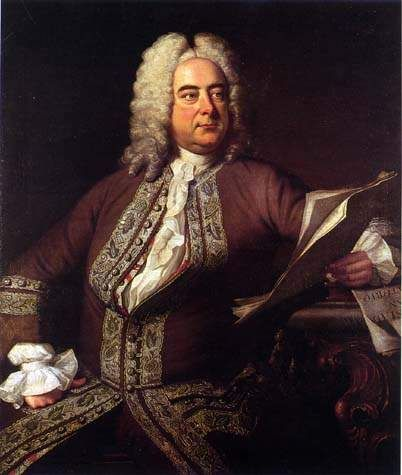

Handel
Georg Friedrich Handel bol nemecký skladateľ, ktorý sa stal jedným z najvýznamnejších a najvplyvnejších hudobníkov barokového obdobia. Narodil sa 23. februára 1685 v Halle (vtedy súčasť Pruského kráľovstva, dnes Nemecko) a veľkú časť svojej kariéry strávil v Anglicku, kde sa stal jedným z najuznávanejších skladateľov svojej doby. Handel bol mimoriadne plodný skladateľ a jeho diela pokrývajú široké spektrum žánrov vrátane opery, oratória, koncertu a orchestrálnej hudby. Najznámejšie dielo „Mesiáš“, oratórium, je považované za jedno z najvýznamnejších hudobných diel všetkých čias. Tieto oratóriá, ako napríklad „Július Cezar“ a „Saul“, sú plné dramatických momentov a silných hudobných tém, ktoré stelesňujú Handelovu schopnosť vyjadriť silné emócie a veľkoleposť. Okrem oratórií sa Handel preslávil aj svojimi operami, z ktorých mnohé sa stali základom operného repertoáru. Jeho opery, ako napríklad „Rinaldo“ a „Giulio Cesare", sú známé svojimi nádhernými áriami a bohatými orchestrálnymi pasážami. Handel sa preslávil aj ako virtuózny klavírny a cembalistický hráč, a hoci jeho hudba bola veľmi populárna počas jeho života, po jeho smrti upadla na niekoľko desaťročí do zabudnutia. Avšak v 19. storočí jeho diela zažili obrodenie a dnes sú neodmysliteľnou súčasťou klasického hudobného repertoáru.
Späť na hlavnú stránku